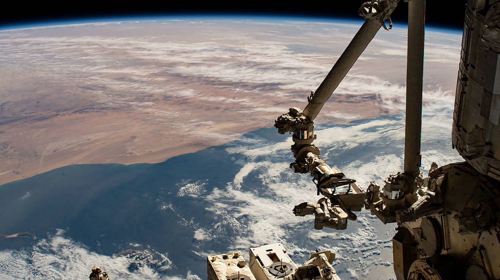
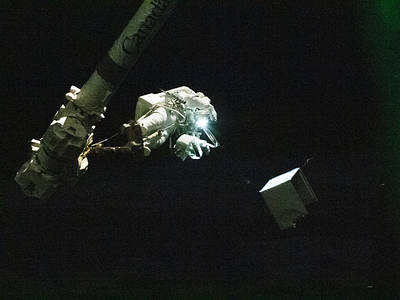

About ISS


The International Space station is a large spacecraft that orbits around Earth. The first piece of the ISS was launched in 1998 and more pieces were added for two years before the station was ready for people. Since November of 2000, the station has been continuously occupied. NASA uses the ISS to learn about living and working in space. We have also learned how to keep a space station working for a long time. This will allow NASA to send humans deeper into space.
Fun Facts
- 242 individuals from 19 countries have visited the ISS
- In 24 hours the space station makes 16 orbits of Earth
- The ISS travels at the speed of five miles per second
- A spacecraft can arrive at the space station in about four hours after launching from Earth

The International Space Station is allowing us to prepare for future deep space journeys.


Building the International Space Station was something we could only imagine until the 1940's.